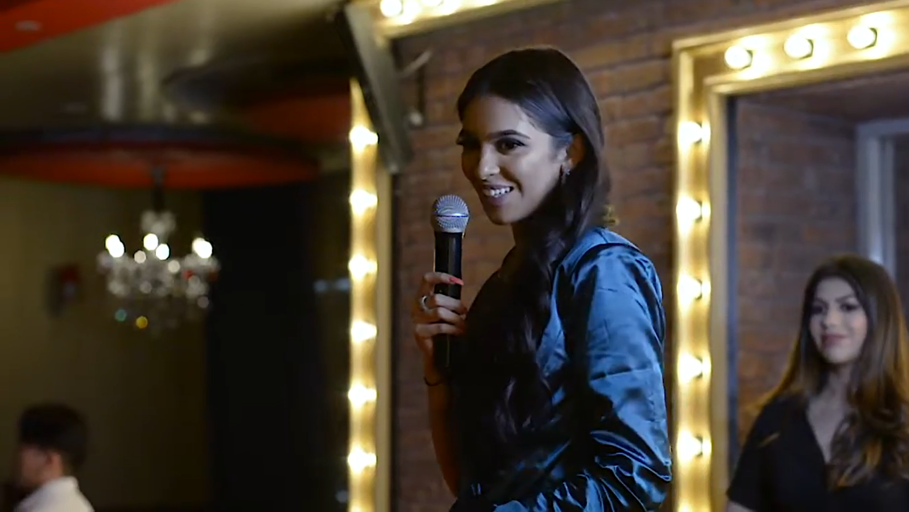
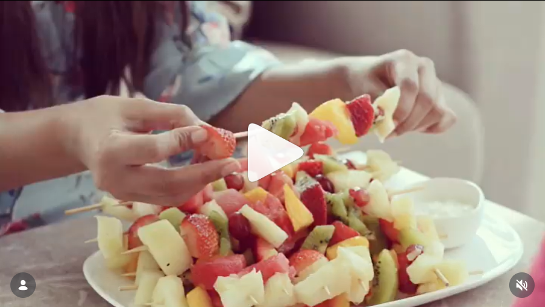
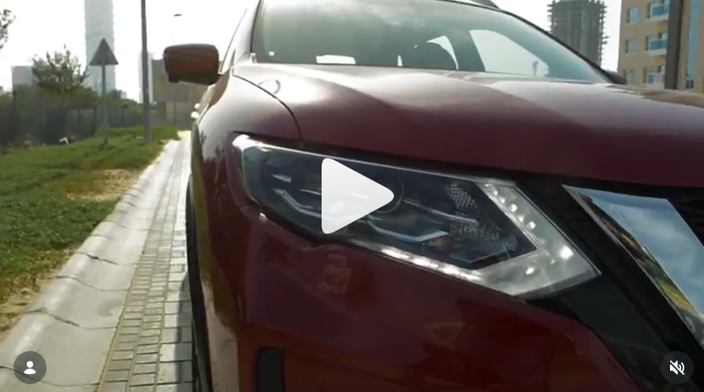
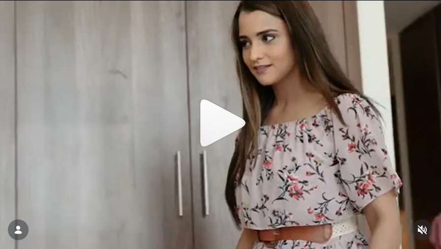
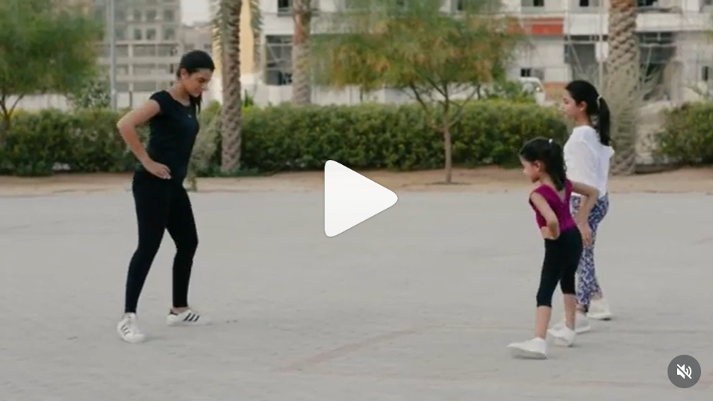

Influencer Content Production
Videography and editing for Dubai-based creators, events, and sponsored brand content.
Alongside my broader marketing work, I have also produced content for Dubai-based influencers and creators. This included filming and editing a beauty workshop for Hala Owais and creating sponsored social media video content for Samina Merchant across brand collaborations. The work focused on capturing content that felt polished, platform-appropriate, and aligned with both creator identity and brand objectives.

Creator and influencer content
Worked on content designed for personal brands, live events, and sponsored collaborations.
YouTube and Instagram
Produced video content shaped for social platforms and creator-led digital publishing.
Filming, editing, and presentation
The emphasis was on visual quality, pacing, and creator-friendly storytelling.
Brand-ready creator content
The outcome was content that felt polished enough for both audience engagement and commercial collaborations.
Creator content needs a different production mindset than corporate marketing
Influencer and creator content has to balance authenticity, speed, visual polish, and platform fit. Whether the work is for an event or a sponsored collaboration, the final output has to feel natural to the creator while still delivering what the brand or audience expects.
The challenge
These projects required content that felt polished without becoming too commercial or overproduced. The work had to support creator identity, feel right for social platforms, and still communicate the intended message clearly.
What the work needed to do
- Capture events and collaborations in a visually polished way
- Edit content for social-first pacing and audience attention
- Support both creator branding and brand collaboration goals
- Produce content that felt platform-native rather than generic
- Turn moments into reusable digital assets
Videography, editing, and content support for creators and collaborations
My role covered content capture and editing across two different creator contexts: event-based beauty content for Hala Owais and sponsored collaboration content for Samina Merchant.
Production work
- Filmed creator-led events and brand-related content
- Captured footage with a focus on visual polish and social usability
- Worked across different environments including workshops and brand collaborations
- Supported content output that suited creator publishing styles
Post-production work
- Edited videos for YouTube and Instagram-led usage
- Focused on pacing, clarity, and presentation
- Helped shape content that felt polished but natural
- Delivered assets suitable for both creator and brand-facing use
Creator-focused production across events and sponsored content
The work spanned two types of creator content. One was event-led and education-oriented. The other was campaign-style and brand collaboration focused. Together, they show a flexible production skill set built around creators and social platforms.
Event videography
Filmed live creator-led content in a way that could later be shaped into a clear and watchable final video.
- Covered live workshop footage for Hala Owais
- Captured relevant moments with social and YouTube use in mind
- Focused on practical, creator-friendly event coverage
- Helped turn a real event into a publishable digital asset
Video editing
Edited creator content to improve clarity, pacing, and overall viewing experience.
- Created more polished outputs from raw footage
- Improved flow for social and creator audiences
- Focused on attention, rhythm, and presentation
- Helped content feel intentional rather than raw
YouTube-ready content
Produced longer-form creator content suitable for YouTube publishing and audience viewing.
- Edited workshop coverage into a watchable final video
- Considered pacing beyond short-form content standards
- Created content that retained context and continuity
- Supported creator-led educational or event publishing
Sponsored social content
Supported branded collaboration content for Samina Merchant across consumer-facing sponsorship work.
- Worked on creator content tied to brand partnerships
- Supported sponsored storytelling for social audiences
- Contributed to content involving consumer-facing brands
- Balanced brand visibility with creator presentation
Influencer ad production
Produced creator-led content that could function as organic-feeling social content while still serving promotional objectives.
- Worked on content for brand collaborations
- Helped shape videos that felt social-first
- Supported sponsored messaging without losing personality
- Adapted content style to creator and campaign context
Creator-first production approach
Worked in a way that respected creator identity while still delivering polished outputs.
- Kept content aligned with the creator’s personal style
- Focused on social-native execution
- Made content usable for both audience growth and commercial work
- Combined production quality with platform relevance
Two creator contexts, one production skill set
Hala Owais
Hala Owais is a Dubai-based beauty blogger. I worked with her on a one-time beauty workshop, handling videography and editing so the masterclass could be turned into a polished video asset.
Samina Merchant
I worked with Samina Merchant on multiple occasions to create video content for sponsored collaborations, including promotions involving consumer brands. The work focused on creator-led content that felt polished and platform-ready.
What this work changed
These projects show the ability to create content that works in creator environments where visual quality, speed, authenticity, and platform fit all matter at the same time.
More polished creator content
Event and collaboration footage was turned into cleaner, more presentable final content for publishing and brand-facing use.
Better brand collaboration support
Sponsored creator content was produced in a way that supported both commercial objectives and creator presentation.
Stronger social-first execution
The work reflects an understanding of how content needs to feel on social platforms, not just how it looks in isolation.
Examples from the workstream
These examples cover both workshop-based creator content and influencer brand collaboration content.

Hala Owais workshop coverage
Beauty workshop footage captured and edited into a polished YouTube-ready masterclass video.

Sponsored creator collaboration
Example of influencer content created to support a brand partnership while keeping the creator front and center.

Brand-led influencer content
Social-first collaboration content produced for creator-brand promotion in a way that felt polished and platform-appropriate.

Creator campaign execution
Another example of collaboration content shaped for audience attention, creator branding, and commercial use.

Influencer video production
Content created for repeat creator work, showing consistency across influencer-led brand collaborations.
What this project says about how I work
- I can create content that fits creator brands, not just corporate brand systems.
- I understand how to balance polish with authenticity in social-first production.
- I am comfortable working across live events, branded collaborations, and creator content formats.
- I treat editing as part of strategy, not just post-production.
Want to see another project?
Explore another case study covering hospitality, education, logistics, healthcare consulting, or real estate performance marketing.